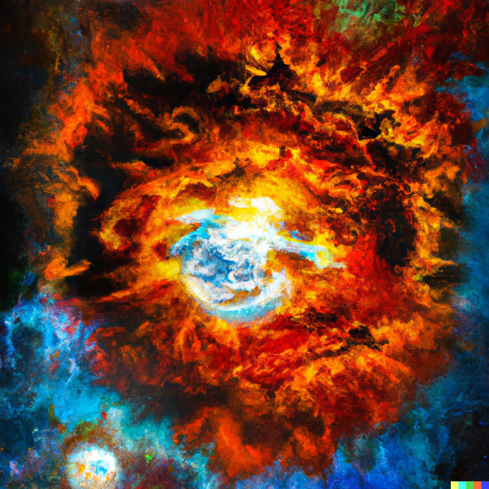

Trippy and Maverick were thrilled to have been saved from the dangerous creature in the swirling clouds of the red planet of Betelgeuse. They were determined to continue their adventures, and they set off to explore the towering mountains of the planet.
As they wandered through the clouds, they stumbled upon a clearing where a group of aliens were gathered around a fire. They smelled something delicious, and they realized that the aliens were cooking a vegan daisy burger. Trippy and Maverick were intrigued, and they approached the aliens to ask for the recipe. The aliens were happy to share, and they told the horses how to make the delicious burger.
Trippy and Maverick decided to try their hand at making the burger, and they gathered all the ingredients they needed. They chopped the vegetables and mixed the patty, but they quickly realized that they were not very good at cooking. "This is harder than it looks," Maverick said, as he struggled to flip the burger without burning it. "I think we should have just stuck to exploring the mountains," Trippy joked.
As they continued to cook, they accidentally knocked over a bottle of ketchup, which spilled all over the fire. The flames erupted, and the horses panicked. "Oh no, we've set the planet on fire!" Trippy exclaimed. "We have to put it out before it spreads!" Maverick said, as he grabbed a nearby bucket of water and threw it on the flames. But their efforts were in vain, and the fire continued to spread. It quickly engulfed the entire clearing, and the aliens were forced to flee for their lives.
Trippy and Maverick were horrified by what they had done, and they felt terrible for causing such destruction. They tried to put out the fire, but it was too big for them to handle. As the fire raged on, it began to spread to other parts of the planet. It quickly grew out of control, and it started to threaten the lives of all the creatures on the planet of Betelgeuse.
Trippy and Maverick were shocked by the destruction they had caused on the planet of Betelgeuse. They knew they had to make things right, and they set off to explore the other planets in the galaxy to find a solution. As they journeyed through the stars, they encountered many strange and wonderful creatures. They visited the ice planet of Polaris, where they met a group of friendly polar bears who taught them how to ice skate. They also visited the jungle planet of Arborea, where they met a tribe of talking apes who showed them how to swing from tree to tree.
But no matter where they went, they couldn't find a way to stop the fire on the planet of Betelgeuse. They were starting to lose hope, when they stumbled upon a beautiful, magical planet called Elysium. Elysium was a paradise, filled with lush gardens and sparkling waterfalls. The horses were amazed by the beauty of the planet, and they quickly made friends with the inhabitants, a race of winged unicorns.
The unicorns were kind and wise, and they listened to Trippy and Maverick's tale of woe. They promised to help the horses, and they took them to see the Wise Old Dragon, the guardian of Elysium.
The Wise Old Dragon was a majestic creature, with scales of gold and eyes that glowed with wisdom. She listened to Trippy and Maverick's story, and she nodded gravely. "The fire in Betelgeuse is a terrible thing," she said. "But fear not, for I can help you stop it. I have the power to regenerate planets, and I will use it to bring Betelgeuse's planet back to life."
Trippy and Maverick were overjoyed, and they thanked the Wise Old Dragon profusely. She smiled, and with a wave of her hand, she began to cast her spell. A bright light filled the sky, and Trippy and Maverick watched in awe as the fire on the planet of Betelgeuse was extinguished. The planet began to heal, and new life sprouted from the ashes.
Trippy and Maverick were amazed by the power of the Wise Old Dragon, and they vowed to use their newfound knowledge to help others in need. They continued their adventures, grateful for the magic of Elysium and the friends they had made along the way.
And as they soared through the galaxy, they knew that no matter what dangers they might face, they would always have each other and the power of friendship to guide them through.